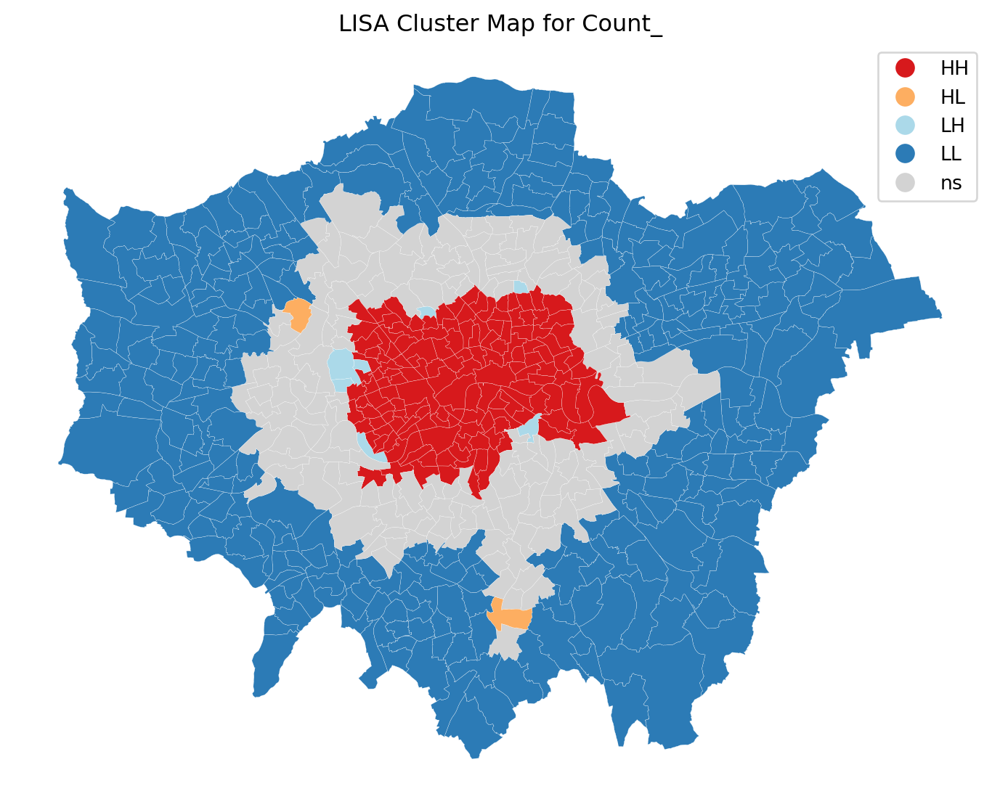
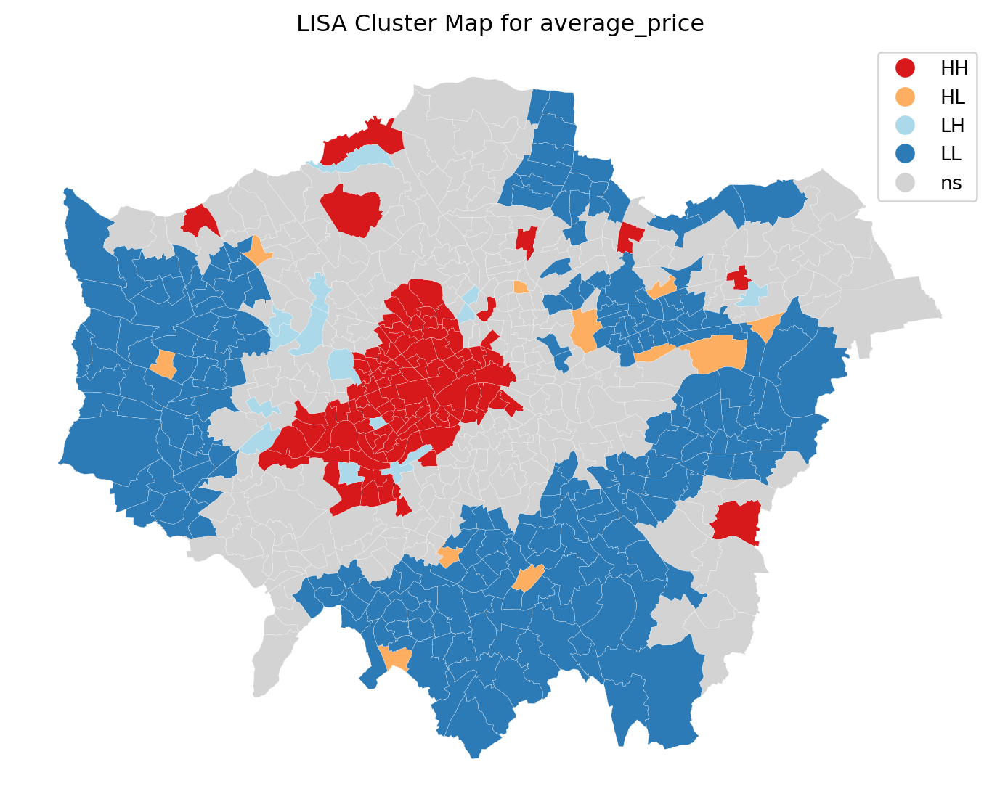
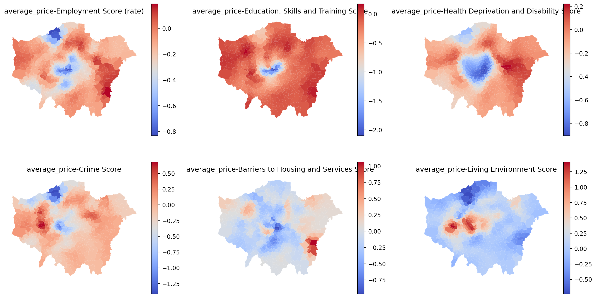
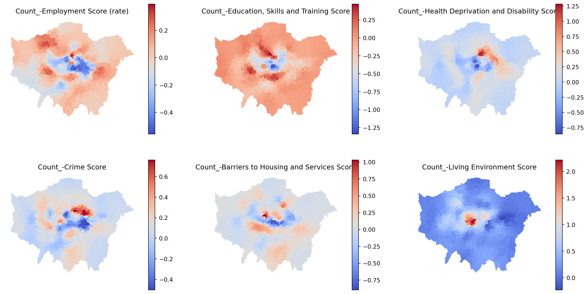

/tmp/ipykernel_236/3569245906.py:3: DtypeWarning:
Columns (17) have mixed types. Specify dtype option on import or set low_memory=False.
Group Name’s Group Project
Brief Group Reflection
Went well:
1.The selected analysis method effectively analyzes the spatial differentiation characteristics of the relationship between Airbnb and deprivation index.
2.The findings of the study are well suited to complement the policy
challenge：
1.The large amount of data in Airbnb’s data set poses a challenge to the preprocess of data
2.Choosing the right parameters and specifications for the GWR model and getting the model to run successfully in JupyterLab was a challenge.
Priorities for Feedback
Are there any areas on which you would appreciate more detailed feedback if we’re able to offer it?
We would like to get feedback on methodology, especially the use of GWR. Also, we would like the feedback on the broader implications of findings and suggestions for policy recommendations to help us enhance the practical relevance.
Response to Questions
This study explores the spatial distribution pattern of Airbnb using cluster analysis and constructs its relationship with Deprivation using the GWR model, which aims to provide a evidence for optimising Airbnb’s policy and management mode. The materials needed for the study have been saved in the following link, to avoid errors, please download the data directly when reproducing the code.
https://github.com/songzimen/FSDS_Deprivation_Airbnb_GWR.git
1. Who collected the data?
:::
The dataset for the study consists of two parts. The Airbnb data comes from Inside Airbnb “Inside airbnb” (n.d.), while the Deprivation data is from the Department for Levelling Up, Housing & Communities UK Government (2019), which is part of the UK government.
( 2 points; Answer due Week 7 )
:::
2. Why did they collect it?
:::
Inside Airbnb collects publicly available data from the Airbnb website to provide data and advocacy about Airbnb’s impact on residential communities. Their aim is to enable residents to better understand and decide how to manage the affairs of renting out their homes to tourists and thereby play a greater role in the short-term letting market.
The Department for Levelling Up, Housing & Communities (2019) regards the Deprivation Indices as a useful tool to measure the relative distribution of deprivation within a small area. The dataset is designed to help government and the public better understand socio-economic disparities and optimise decision-making and resource allocation accordingly.
( 4 points; Answer due Week 7 )
:::
3. How was the data collected?
::
Inside Airbnb, created by tech expert Murray Cox and supported by many urban research specialists, uses a suite of open-source technologies, including D3, Bootstrap, Python, PostgreSQL, and Google Fonts for compiling and analyzing publicly available data from the Airbnb platform.
The deprivation data, as detailed in the “English Indices of Deprivation 2019” document, is gathered using a comprehensive approach. This process involves the collection and integration of various socio-economic indicators from multiple government data sources. These indicators cover diverse aspects such as income, employment, education, health, crime, and barriers to housing and services. The data is then meticulously compiled to create a detailed picture of socio-economic conditions across geographic areas. This method ensures an accurate and multi-faceted view of deprivation at a localized level.
( 5 points; Answer due Week 8 )
:::
4. How does the method of collection impact the completeness and/or accuracy of its representation of the process it seeks to study, and what wider issues does this raise?
4.1 Data Source and Timing
The Deprivation Indices are based on comprehensive statistical data from various government departments, each with different data collection frequencies and scales. This results in extended intervals between updates (2007, 2010, 2015, 2019). Any changes in data collection frameworks by these departments can significantly impact the indices. Particularly, the lack of updates during pivotal events like the 2020-2022 global pandemic might limit the dataset’s current relevance to urban development. In contrast, Airbnb’s data is more dynamic and frequently updated, capturing immediate changes despite being sourced solely from an online platform. These differences in update frequency and source create disparities in temporal scales between the two datasets, posing challenges in accurately linking Airbnb’s influence on community deprivation.
4.2 Data Quality and Reliability
The Indices of Deprivation benefit from stringent quality assurance processes, including comprehensive checks and validation. In contrast, the collection methods for Airbnb data, such as web scraping or API, might adhere to different standards of quality control. This variation in quality assurance practices could affect the reliability of the Airbnb data, especially when it’s compared with the well-validated Deprivation Indices. Such differences in data quality and control methods highlight potential challenges in assessing the datasets’ comparability and reliability.
4.3 Wider Issues
Dynamic Relationship: The link between Airbnb’s presence and community deprivation is constantly evolving, reflecting changes in Airbnb’s market status. This fluidity must be carefully considered during analysis.
Timeframe Discrepancies: The different update intervals of the Deprivation Indices and Airbnb data can lead to challenges in accurately depicting their current relationship. Airbnb’s real-time updates, influenced by timely and specific factors, add another layer of complexity.
Data Quality and Ethical Implications: The quality and reliability of Airbnb’s data, potentially less controlled than the Deprivation Indices, introduce ethical concerns. Variations in data accuracy or potential biases could significantly affect the credibility of the research findings.
( 11 points; Answer due Week 9 )
:::
5. What ethical considerations does the use of this data raise?
5.1 Privacy and Data Protection
Handling both the Indices of Deprivation and Airbnb data demands strict privacy considerations. Sensitive details, like host names or personal photos, should be carefully excluded or anonymized. Any unavoidable use of such private data requires stringent protective measures and necessary permissions to ensure compliance with data protection laws.
5.2 Potential Stigmatization
The combined use of deprivation indices and Airbnb data carries the risk of inadvertently stigmatizing certain areas as “deprived” or “underprivileged.” This could influence public perception and economic activities in these regions, affecting local residents and potentially skewing Airbnb investment and user preferences.
5.3 Bias and Accuracy in Data Representation
The varying data collection methods and update frequencies between the two datasets might lead to biases. Ethical research practices necessitate transparent acknowledgment of these potential biases and limitations of the study.
5.4 Responsibility in Data Interpretation
Researchers must responsibly interpret and present their findings, considering the dynamic nature of Airbnb’s market influence and the socio-economic factors reflected in the deprivation data.
( 18 points; Answer due ?var:assess.group-date )
:::
6. With reference to the data (i.e. using numbers, figures, maps, and descriptive statistics), what does an analysis of Hosts and Listing types suggest about the nature of Airbnb lets in London?
The provided image below presents an analysis of Airbnb’s room types in London, focusing on the quantity and average price, alongside a detailed view of the top 10 hosts’ offerings. Here are the refined key insights.
“Entire home/apt” is the predominant listing category and, together with “Hotel room”, garners a higher price point than other accommodation types.
The majority of the most active hosts in London list “Entire home/apt” options, suggesting a prevalent strategy of renting out entire properties.
There’s a notable diversity in listing prices across room types and hosts, implying that prices are set variably based on location, property quality, and the services provided.
( 15 points; Answer due ?var:assess.group-date )
:::
/tmp/ipykernel_236/2587134144.py:15: SettingWithCopyWarning:
A value is trying to be set on a copy of a slice from a DataFrame.
Try using .loc[row_indexer,col_indexer] = value instead
See the caveats in the documentation: https://pandas.pydata.org/pandas-docs/stable/user_guide/indexing.html#returning-a-view-versus-a-copy
/tmp/ipykernel_236/2587134144.py:21: FutureWarning:
The default of observed=False is deprecated and will be changed to True in a future version of pandas. Pass observed=False to retain current behavior or observed=True to adopt the future default and silence this warning.
/tmp/ipykernel_236/2587134144.py:24: FutureWarning:
The default of observed=False is deprecated and will be changed to True in a future version of pandas. Pass observed=False to retain current behavior or observed=True to adopt the future default and silence this warning.

The heatmap below illustrates the concentration of Airbnb listings across London, showing a hotspot in the central region that gradually fades outwards. The densest area, highlighted in bright yellow, indicates a cluster of listings located to the east and south of central London, an area known for attractions like Tower Bridge, Canary Wharf, and Greenwich Observatory. This aligns with the bar chart showing a high volume of ‘Entire home/apt’ listings, suggesting hosts are meeting the strong demand for accommodations in these desirable locations, reflective of London’s varied socio-economic landscape.
/opt/conda/lib/python3.11/site-packages/pyproj/crs/crs.py:141: FutureWarning:
'+init=<authority>:<code>' syntax is deprecated. '<authority>:<code>' is the preferred initialization method. When making the change, be mindful of axis order changes: https://pyproj4.github.io/pyproj/stable/gotchas.html#axis-order-changes-in-proj-6

7. Drawing on your previous answers, and supporting your response with evidence (e.g. figures, maps, and statistical analysis/models), how could this data set be used to inform the regulation of Short-Term Lets (STL) in London?
7.1 Introduction: The Rise of the Sharing Economy and the Urgency for Regulation
Amidst the sharing economy’s surge, London’s STL market, propelled by platforms like Airbnb, has dramatically influenced urban housing and community dynamics, prompting calls for regulation to safeguard housing market stability and community welfare. This study harnesses spatial auto-correlation to assess Airbnb distribution patterns and geographic weighted regression (GWR) to examine the influence of deprivation sub-indicators on these prices. By discerning the geographical distribution of Airbnb and the differential impact of deprivation sub-indicators, the research provides deeper insights for policymakers. The integration of these analyses aims to inform STL regulatory strategies, ensuring market growth aligns with community interests and broad socioeconomic context.
( 45 points; Answer due ?var:assess.group-date )
7.2 Spatial Patterns Unveiled: Significant Spatial Segregation in Airbnb Listings
Are there spatial distributional disparities in the number and price of Airbnb’s in London? If exist, what characteristics do they reflect? To answer this question, the study first conducted a global spatial auto-correlation analysis and calculates the Moran’s indices for the two types of spatial data to be 0.76 and 0.43. These results confirm that there are statistically significant spatial distribution differences in both the number of Airbnb listings and the average price of properties across different areas of London.
/tmp/ipykernel_236/3916548628.py:11: FutureWarning:
`use_index` defaults to False but will default to True in future. Set True/False directly to control this behavior and silence this warning
/tmp/ipykernel_236/3916548628.py:11: FutureWarning:
`use_index` defaults to False but will default to True in future. Set True/False directly to control this behavior and silence this warning
Global Moran's I： 0.7554256506929731
The z-test value under random distribution hypothesis: 32.283209075386196
The p-value of the z-test under random distribution hypothesis: 1.2035930392272867e-228
The z-test value under normal distribution hypothesis: 32.00800184002635
The p-value of the Z test under normal distribution hypothesis: 8.438495568419313e-225
Global Moran's I： 0.4251755584591877
The z-test value under random distribution hypothesis: 18.23100860112638
The p-value of the z-test under random distribution hypothesis: 2.9286978716824874e-74
The z-test value under normal distribution hypothesis: 18.044657603586156
The p-value of the Z test under normal distribution hypothesis: 8.690138055356104e-73
To delve deeper into the characteristics of the spatial distribution of Airbnb listings and their average pricing, the study performed a local Moran’s I analysis. This highlights the clustering of high and low values in different areas (see figure below).


The cluster maps show that the distribution of Airbnb listings quantity is significantly clustered in inner and dispersed in outer London areas. The average price clusters are more scattered, with hotspots primarily in the central southwestern part of London and cold spots in the west, north, and southeast. The abundance of tourist resources and infrastructure in Inner London may contribute to a noticeable clustering of Airbnb’s quantity and pricing in these areas. There is a clear demarcation between areas of high and low values, indicating significant differences in economic conditions and accommodation demand between these regions. Airbnb’s average pricing is more susceptible to the degree of poverty in an area (Gutiérrez, García-Palomares, Romanillos, & Salas-Olmedo, 2017) Gutiérrez et al. (2017). We will now proceed to further investigate the relationship between seven poverty indicators and average pricing using GWR.
7.3 Intersecting Correlations: Airbnb Pricing and Deprivation
Given that Airbnb listing prices have an irregularly spatial distribution featuring clustering, we would like to explore the link between prices and the indicators of Deprivation. Imagine whether the prices of Airbnb listings are affected by the income and education level of the residents in the neighbourhood where they are located?
===========================================================================
Model type Gaussian
Number of observations: 625
Number of covariates: 2
Global Regression Results
---------------------------------------------------------------------------
Residual sum of squares: 611.830
Log-likelihood: -880.181
AIC: 1764.362
AICc: 1766.401
BIC: -3398.890
R2: 0.021
Adj. R2: 0.020
Variable Est. SE t(Est/SE) p-value
------------------------------- ---------- ---------- ---------- ----------
X0 -0.000 0.040 -0.000 1.000
X1 -0.145 0.040 -3.662 0.000
Geographically Weighted Regression (GWR) Results
---------------------------------------------------------------------------
Spatial kernel: Adaptive bisquare
Bandwidth used: 62.000
Diagnostic information
---------------------------------------------------------------------------
Residual sum of squares: 343.136
Effective number of parameters (trace(S)): 52.109
Degree of freedom (n - trace(S)): 572.891
Sigma estimate: 0.774
Log-likelihood: -699.454
AIC: 1505.126
AICc: 1515.194
BIC: 1740.811
R2: 0.451
Adjusted R2: 0.401
Adj. alpha (95%): 0.002
Adj. critical t value (95%): 3.116
Summary Statistics For GWR Parameter Estimates
---------------------------------------------------------------------------
Variable Mean STD Min Median Max
-------------------- ---------- ---------- ---------- ---------- ----------
X0 0.006 0.569 -0.643 -0.191 2.209
X1 -0.185 0.188 -0.834 -0.142 0.190
===========================================================================
None
===========================================================================
Model type Gaussian
Number of observations: 625
Number of covariates: 2
Global Regression Results
---------------------------------------------------------------------------
Residual sum of squares: 575.051
Log-likelihood: -860.808
AIC: 1725.615
AICc: 1727.654
BIC: -3435.668
R2: 0.080
Adj. R2: 0.078
Variable Est. SE t(Est/SE) p-value
------------------------------- ---------- ---------- ---------- ----------
X0 -0.000 0.038 -0.000 1.000
X1 -0.283 0.038 -7.356 0.000
Geographically Weighted Regression (GWR) Results
---------------------------------------------------------------------------
Spatial kernel: Adaptive bisquare
Bandwidth used: 61.000
Diagnostic information
---------------------------------------------------------------------------
Residual sum of squares: 340.666
Effective number of parameters (trace(S)): 52.524
Degree of freedom (n - trace(S)): 572.476
Sigma estimate: 0.771
Log-likelihood: -697.197
AIC: 1501.441
AICc: 1511.672
BIC: 1738.967
R2: 0.455
Adjusted R2: 0.405
Adj. alpha (95%): 0.002
Adj. critical t value (95%): 3.118
Summary Statistics For GWR Parameter Estimates
---------------------------------------------------------------------------
Variable Mean STD Min Median Max
-------------------- ---------- ---------- ---------- ---------- ----------
X0 -0.094 0.419 -0.634 -0.209 2.072
X1 -0.292 0.376 -2.102 -0.172 0.174
===========================================================================
None
===========================================================================
Model type Gaussian
Number of observations: 625
Number of covariates: 2
Global Regression Results
---------------------------------------------------------------------------
Residual sum of squares: 579.326
Log-likelihood: -863.122
AIC: 1730.244
AICc: 1732.283
BIC: -3431.394
R2: 0.073
Adj. R2: 0.072
Variable Est. SE t(Est/SE) p-value
------------------------------- ---------- ---------- ---------- ----------
X0 -0.000 0.039 -0.000 1.000
X1 -0.270 0.039 -7.008 0.000
Geographically Weighted Regression (GWR) Results
---------------------------------------------------------------------------
Spatial kernel: Adaptive bisquare
Bandwidth used: 103.000
Diagnostic information
---------------------------------------------------------------------------
Residual sum of squares: 345.964
Effective number of parameters (trace(S)): 29.717
Degree of freedom (n - trace(S)): 595.283
Sigma estimate: 0.762
Log-likelihood: -702.019
AIC: 1465.472
AICc: 1468.757
BIC: 1601.787
R2: 0.446
Adjusted R2: 0.419
Adj. alpha (95%): 0.003
Adj. critical t value (95%): 2.944
Summary Statistics For GWR Parameter Estimates
---------------------------------------------------------------------------
Variable Mean STD Min Median Max
-------------------- ---------- ---------- ---------- ---------- ----------
X0 0.032 0.517 -0.589 -0.208 1.436
X1 -0.227 0.264 -0.905 -0.156 0.219
===========================================================================
None
===========================================================================
Model type Gaussian
Number of observations: 625
Number of covariates: 2
Global Regression Results
---------------------------------------------------------------------------
Residual sum of squares: 621.780
Log-likelihood: -885.222
AIC: 1774.444
AICc: 1776.483
BIC: -3388.940
R2: 0.005
Adj. R2: 0.004
Variable Est. SE t(Est/SE) p-value
------------------------------- ---------- ---------- ---------- ----------
X0 -0.000 0.040 -0.000 1.000
X1 -0.072 0.040 -1.796 0.072
Geographically Weighted Regression (GWR) Results
---------------------------------------------------------------------------
Spatial kernel: Adaptive bisquare
Bandwidth used: 49.000
Diagnostic information
---------------------------------------------------------------------------
Residual sum of squares: 315.894
Effective number of parameters (trace(S)): 64.787
Degree of freedom (n - trace(S)): 560.213
Sigma estimate: 0.751
Log-likelihood: -673.604
AIC: 1478.782
AICc: 1494.525
BIC: 1770.729
R2: 0.495
Adjusted R2: 0.436
Adj. alpha (95%): 0.002
Adj. critical t value (95%): 3.180
Summary Statistics For GWR Parameter Estimates
---------------------------------------------------------------------------
Variable Mean STD Min Median Max
-------------------- ---------- ---------- ---------- ---------- ----------
X0 -0.001 0.625 -0.934 -0.204 2.365
X1 -0.131 0.296 -1.413 -0.100 0.679
===========================================================================
None
===========================================================================
Model type Gaussian
Number of observations: 625
Number of covariates: 2
Global Regression Results
---------------------------------------------------------------------------
Residual sum of squares: 615.388
Log-likelihood: -881.993
AIC: 1767.986
AICc: 1770.025
BIC: -3395.332
R2: 0.015
Adj. R2: 0.014
Variable Est. SE t(Est/SE) p-value
------------------------------- ---------- ---------- ---------- ----------
X0 -0.000 0.040 -0.000 1.000
X1 -0.124 0.040 -3.119 0.002
Geographically Weighted Regression (GWR) Results
---------------------------------------------------------------------------
Spatial kernel: Adaptive bisquare
Bandwidth used: 45.000
Diagnostic information
---------------------------------------------------------------------------
Residual sum of squares: 331.518
Effective number of parameters (trace(S)): 66.184
Degree of freedom (n - trace(S)): 558.816
Sigma estimate: 0.770
Log-likelihood: -688.690
AIC: 1511.748
AICc: 1528.202
BIC: 1809.894
R2: 0.470
Adjusted R2: 0.407
Adj. alpha (95%): 0.002
Adj. critical t value (95%): 3.187
Summary Statistics For GWR Parameter Estimates
---------------------------------------------------------------------------
Variable Mean STD Min Median Max
-------------------- ---------- ---------- ---------- ---------- ----------
X0 -0.032 0.577 -0.804 -0.229 2.530
X1 -0.087 0.245 -0.962 -0.079 1.061
===========================================================================
None
===========================================================================
Model type Gaussian
Number of observations: 625
Number of covariates: 2
Global Regression Results
---------------------------------------------------------------------------
Residual sum of squares: 557.200
Log-likelihood: -850.953
AIC: 1705.906
AICc: 1707.945
BIC: -3453.519
R2: 0.108
Adj. R2: 0.107
Variable Est. SE t(Est/SE) p-value
------------------------------- ---------- ---------- ---------- ----------
X0 -0.000 0.038 -0.000 1.000
X1 0.329 0.038 8.707 0.000
Geographically Weighted Regression (GWR) Results
---------------------------------------------------------------------------
Spatial kernel: Adaptive bisquare
Bandwidth used: 62.000
Diagnostic information
---------------------------------------------------------------------------
Residual sum of squares: 346.451
Effective number of parameters (trace(S)): 48.693
Degree of freedom (n - trace(S)): 576.307
Sigma estimate: 0.775
Log-likelihood: -702.459
AIC: 1504.304
AICc: 1513.076
BIC: 1724.830
R2: 0.446
Adjusted R2: 0.399
Adj. alpha (95%): 0.002
Adj. critical t value (95%): 3.095
Summary Statistics For GWR Parameter Estimates
---------------------------------------------------------------------------
Variable Mean STD Min Median Max
-------------------- ---------- ---------- ---------- ---------- ----------
X0 -0.163 0.324 -0.739 -0.229 1.333
X1 0.195 0.374 -0.735 0.087 1.407
===========================================================================
None
===========================================================================
Model type Gaussian
Number of observations: 625
Number of covariates: 2
Global Regression Results
---------------------------------------------------------------------------
Residual sum of squares: 617.255
Log-likelihood: -882.940
AIC: 1769.880
AICc: 1771.918
BIC: -3393.464
R2: 0.012
Adj. R2: 0.011
Variable Est. SE t(Est/SE) p-value
------------------------------- ---------- ---------- ---------- ----------
X0 0.000 0.040 0.000 1.000
X1 0.111 0.040 2.796 0.005
Geographically Weighted Regression (GWR) Results
---------------------------------------------------------------------------
Spatial kernel: Adaptive bisquare
Bandwidth used: 45.000
Diagnostic information
---------------------------------------------------------------------------
Residual sum of squares: 140.527
Effective number of parameters (trace(S)): 71.063
Degree of freedom (n - trace(S)): 553.937
Sigma estimate: 0.504
Log-likelihood: -420.476
AIC: 985.078
AICc: 1004.157
BIC: 1304.878
R2: 0.775
Adjusted R2: 0.746
Adj. alpha (95%): 0.001
Adj. critical t value (95%): 3.208
Summary Statistics For GWR Parameter Estimates
---------------------------------------------------------------------------
Variable Mean STD Min Median Max
-------------------- ---------- ---------- ---------- ---------- ----------
X0 0.042 0.826 -0.731 -0.316 2.877
X1 -0.025 0.158 -0.558 0.007 0.391
===========================================================================
None
===========================================================================
Model type Gaussian
Number of observations: 625
Number of covariates: 2
Global Regression Results
---------------------------------------------------------------------------
Residual sum of squares: 599.826
Log-likelihood: -873.989
AIC: 1751.978
AICc: 1754.017
BIC: -3410.893
R2: 0.040
Adj. R2: 0.039
Variable Est. SE t(Est/SE) p-value
------------------------------- ---------- ---------- ---------- ----------
X0 0.000 0.039 0.000 1.000
X1 -0.201 0.039 -5.113 0.000
Geographically Weighted Regression (GWR) Results
---------------------------------------------------------------------------
Spatial kernel: Adaptive bisquare
Bandwidth used: 45.000
Diagnostic information
---------------------------------------------------------------------------
Residual sum of squares: 135.277
Effective number of parameters (trace(S)): 69.899
Degree of freedom (n - trace(S)): 555.101
Sigma estimate: 0.494
Log-likelihood: -408.578
AIC: 958.955
AICc: 977.388
BIC: 1273.589
R2: 0.784
Adjusted R2: 0.756
Adj. alpha (95%): 0.001
Adj. critical t value (95%): 3.203
Summary Statistics For GWR Parameter Estimates
---------------------------------------------------------------------------
Variable Mean STD Min Median Max
-------------------- ---------- ---------- ---------- ---------- ----------
X0 0.020 0.776 -0.741 -0.312 2.552
X1 -0.119 0.248 -1.341 -0.046 0.469
===========================================================================
None
===========================================================================
Model type Gaussian
Number of observations: 625
Number of covariates: 2
Global Regression Results
---------------------------------------------------------------------------
Residual sum of squares: 610.677
Log-likelihood: -879.592
AIC: 1763.184
AICc: 1765.222
BIC: -3400.042
R2: 0.023
Adj. R2: 0.021
Variable Est. SE t(Est/SE) p-value
------------------------------- ---------- ---------- ---------- ----------
X0 -0.000 0.040 -0.000 1.000
X1 0.151 0.040 3.823 0.000
Geographically Weighted Regression (GWR) Results
---------------------------------------------------------------------------
Spatial kernel: Adaptive bisquare
Bandwidth used: 45.000
Diagnostic information
---------------------------------------------------------------------------
Residual sum of squares: 145.064
Effective number of parameters (trace(S)): 67.422
Degree of freedom (n - trace(S)): 557.578
Sigma estimate: 0.510
Log-likelihood: -430.406
AIC: 997.655
AICc: 1014.754
BIC: 1301.293
R2: 0.768
Adjusted R2: 0.740
Adj. alpha (95%): 0.001
Adj. critical t value (95%): 3.192
Summary Statistics For GWR Parameter Estimates
---------------------------------------------------------------------------
Variable Mean STD Min Median Max
-------------------- ---------- ---------- ---------- ---------- ----------
X0 -0.030 0.798 -0.724 -0.385 2.857
X1 0.087 0.250 -0.856 0.067 1.282
===========================================================================
None
===========================================================================
Model type Gaussian
Number of observations: 625
Number of covariates: 2
Global Regression Results
---------------------------------------------------------------------------
Residual sum of squares: 586.994
Log-likelihood: -867.231
AIC: 1738.462
AICc: 1740.501
BIC: -3423.726
R2: 0.061
Adj. R2: 0.059
Variable Est. SE t(Est/SE) p-value
------------------------------- ---------- ---------- ---------- ----------
X0 -0.000 0.039 -0.000 1.000
X1 0.247 0.039 6.351 0.000
Geographically Weighted Regression (GWR) Results
---------------------------------------------------------------------------
Spatial kernel: Adaptive bisquare
Bandwidth used: 45.000
Diagnostic information
---------------------------------------------------------------------------
Residual sum of squares: 135.536
Effective number of parameters (trace(S)): 70.377
Degree of freedom (n - trace(S)): 554.623
Sigma estimate: 0.494
Log-likelihood: -409.176
AIC: 961.105
AICc: 979.801
BIC: 1277.856
R2: 0.783
Adjusted R2: 0.756
Adj. alpha (95%): 0.001
Adj. critical t value (95%): 3.205
Summary Statistics For GWR Parameter Estimates
---------------------------------------------------------------------------
Variable Mean STD Min Median Max
-------------------- ---------- ---------- ---------- ---------- ----------
X0 0.003 0.785 -0.711 -0.359 3.033
X1 0.084 0.181 -0.502 0.078 0.761
===========================================================================
None
===========================================================================
Model type Gaussian
Number of observations: 625
Number of covariates: 2
Global Regression Results
---------------------------------------------------------------------------
Residual sum of squares: 625.000
Log-likelihood: -886.836
AIC: 1777.673
AICc: 1779.712
BIC: -3385.719
R2: 0.000
Adj. R2: -0.002
Variable Est. SE t(Est/SE) p-value
------------------------------- ---------- ---------- ---------- ----------
X0 -0.000 0.040 -0.000 1.000
X1 0.001 0.040 0.014 0.989
Geographically Weighted Regression (GWR) Results
---------------------------------------------------------------------------
Spatial kernel: Adaptive bisquare
Bandwidth used: 45.000
Diagnostic information
---------------------------------------------------------------------------
Residual sum of squares: 137.330
Effective number of parameters (trace(S)): 66.184
Degree of freedom (n - trace(S)): 558.816
Sigma estimate: 0.496
Log-likelihood: -413.285
AIC: 960.939
AICc: 977.393
BIC: 1259.085
R2: 0.780
Adjusted R2: 0.754
Adj. alpha (95%): 0.002
Adj. critical t value (95%): 3.187
Summary Statistics For GWR Parameter Estimates
---------------------------------------------------------------------------
Variable Mean STD Min Median Max
-------------------- ---------- ---------- ---------- ---------- ----------
X0 0.050 0.819 -0.735 -0.327 3.427
X1 0.050 0.222 -0.896 0.032 1.030
===========================================================================
None
===========================================================================
Model type Gaussian
Number of observations: 625
Number of covariates: 2
Global Regression Results
---------------------------------------------------------------------------
Residual sum of squares: 353.506
Log-likelihood: -708.758
AIC: 1421.517
AICc: 1423.555
BIC: -3657.213
R2: 0.434
Adj. R2: 0.433
Variable Est. SE t(Est/SE) p-value
------------------------------- ---------- ---------- ---------- ----------
X0 0.000 0.030 0.000 1.000
X1 0.659 0.030 21.874 0.000
Geographically Weighted Regression (GWR) Results
---------------------------------------------------------------------------
Spatial kernel: Adaptive bisquare
Bandwidth used: 45.000
Diagnostic information
---------------------------------------------------------------------------
Residual sum of squares: 110.676
Effective number of parameters (trace(S)): 67.180
Degree of freedom (n - trace(S)): 557.820
Sigma estimate: 0.445
Log-likelihood: -345.853
AIC: 828.065
AICc: 845.037
BIC: 1130.630
R2: 0.823
Adjusted R2: 0.802
Adj. alpha (95%): 0.001
Adj. critical t value (95%): 3.191
Summary Statistics For GWR Parameter Estimates
---------------------------------------------------------------------------
Variable Mean STD Min Median Max
-------------------- ---------- ---------- ---------- ---------- ----------
X0 -0.180 0.461 -1.968 -0.327 1.356
X1 0.365 0.369 -0.228 0.238 2.215
===========================================================================
None

Our Geographically Weighted Regression (GWR) analysis reveals a distinct pattern in central London boroughs like the City of London, Westminster, Kensington, Chelsea, and Hammersmith and Fulham. Here, Airbnb prices negatively correlate with indicators such as employment, health, education, and crime rates. This trend suggests that areas with higher deprivation scores see lower Airbnb prices, affected by factors like crime rates and limited infrastructure. Despite their central locations, these areas are less appealing to renters.
The trend shifts as we move to the suburbs. The negative correlation between deprivation scores and Airbnb pricing weakens in areas like Barnet and Harrow. These suburban regions show a different dynamic, where high housing supply and lower demand drive prices down. A notable deviation is observed in living environment scores. In central areas, the aged infrastructure does not deter high Airbnb prices, likely due to the allure of prime locations and tourist attractions. In contrast, suburban Airbnb listings show a negative correlation, indicating a preference for newer, well-maintained properties in these less crowded areas.
7.4 Conclusion: What can policy do?
Our analysis indicates that in Inner London, Airbnb prices are negatively impacted by high poverty levels, particularly in areas with challenges in employment, education, health, and disability. This situation calls for a customized approach to Airbnb regulation in these neighborhoods.
Inner London Measures:
For Inner London, we propose two key strategies to support diverse groups and enhance the Airbnb market. Firstly, we recommend economic incentives for special groups including individuals with disabilities, health issues, the unemployed. By offering short-term rental discounts to these groups, landlords would receive subsidies, fostering social equity and making housing more affordable. Secondly, we advocate for supportive partnerships with government rental programs (KeyNest, 2019) “Airbnb regulations in london” (2019). These collaborations can provide security and financial benefits to landlords in disadvantaged areas, creating a more stable and equitable rental market in Inner London.
Outer London Strategy:
In Outer London, our focus shifts to elevating the quality of Airbnb listings to boost market competitiveness. The strategy here emphasizes prioritizing high-quality listings. Implementing a quality assessment system will help regulate and elevate the standard of accommodations, ensuring only the best are available for rent. This measure aims to attract guests seeking high-standard accommodations and positions Outer London’s Airbnb market as a provider of premium lodging experiences. By concentrating on quality over quantity,
References
“Airbnb regulations in london” (2019). Available at: https://keynest.com/blog/airbnb-regulations-london.
Gutiérrez, J. et al. (2017) “The eruption of airbnb in tourist cities: Comparing spatial patterns of hotels and peer-to-peer accommodation in barcelona,” Tourism Management, 62, pp. 278–291.
“Inside airbnb” (n.d.). Available at: http://insideairbnb.com.
UK Government (2019) “English indices of deprivation.” Available at: https://www.gov.uk/government/collections/english-indices-of-deprivation.